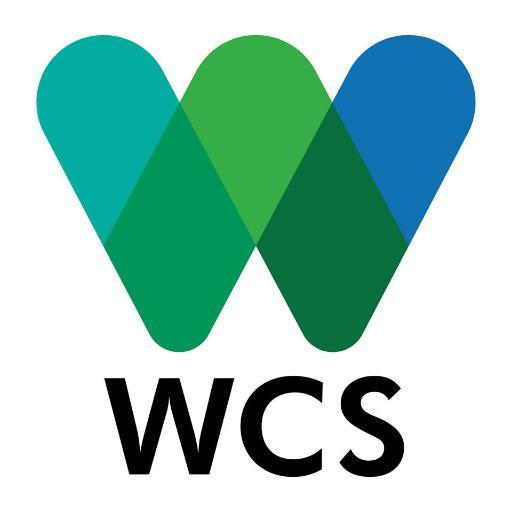
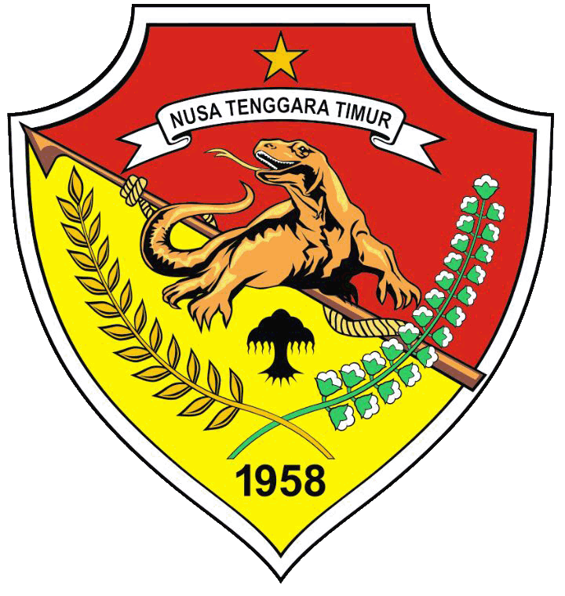
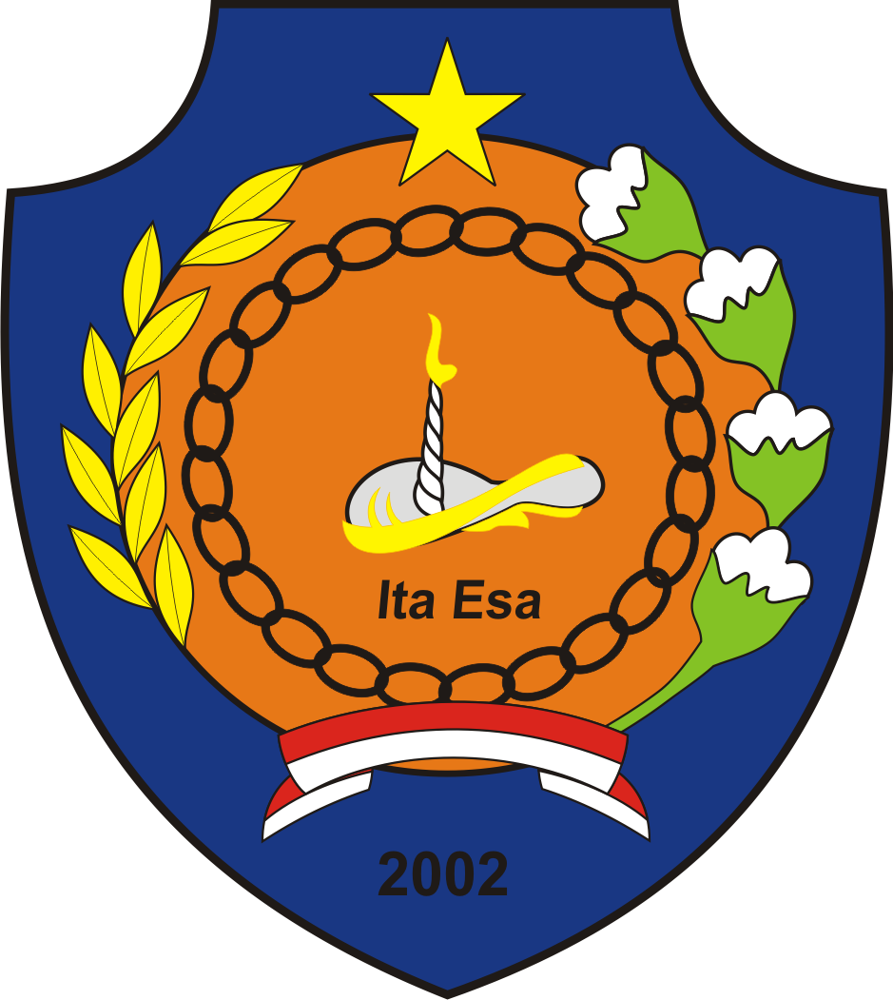
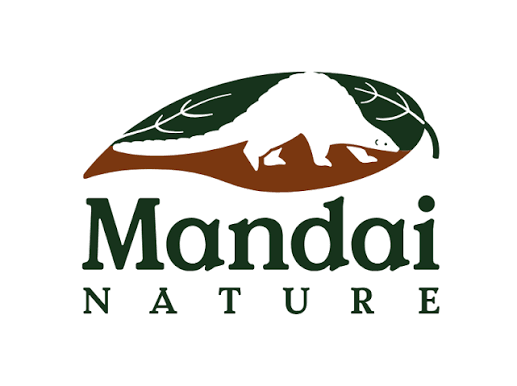
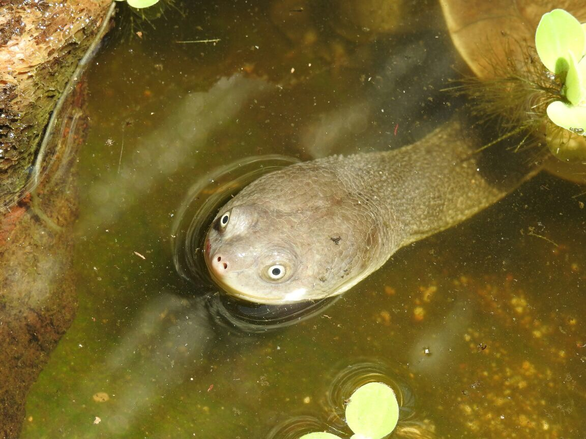
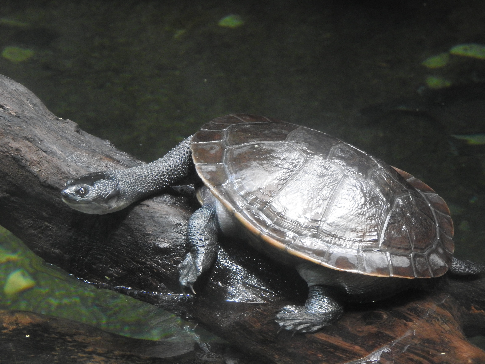

Overview
Established in 2016, this species conservation programme supports the recovery of the Rote Island snake-necked turtle (Chelodina mccordi), which was considered extinct in the wild on Rote Island, Indonesia. The programme conducts long-term in situ research to identify and monitor remaining populations and habitats, while also establishing Indonesia's first assurance colony for the species in Kupang to support future reintroduction through the repatriation of individuals from captive populations in zoos. This is a collaborative effort led by the WCS Indonesia Program in partnership with the national government through the Ministry of Forestry (BBKSDA NTT), the East Nusa Tenggara provincial government, and the Rote Regency government, with support from international partners including Mandai Nature, Singapore Zoo, Bronx Zoo, and other donors. Key conservation milestones include successfully securing national protection for the species in 2018 and supporting the designation of its three remaining habitats—Ledulu, Lendoen, and Peto—as Essential Ecosystem Areas by the East Nusa Tenggara provincial government in 2019.
Maslim helped establish and lead this programme from 2016–2020 and is no longer involved in its day-to-day implementation. For the latest updates from the project, visit WCS Indonesia's Rote Island programme page and Mandai Nature's Rote Island programme page.
Habitat assessment and protection
The programme carried out systematic habitat surveys across Rote Island to identify any remaining populations and to determine which lakes and wetlands still offered suitable habitat for the species. This included spatial habitat suitability modelling using Landsat-8 satellite imagery and GIS to map habitat quality across the island — work that helped narrow the search and management focus to the three surviving candidate sites: Ledulu, Lendoen, and Peto lakes. (Latifiana et al., 2018)
Assurance colonies & reintroduction
The programme established Indonesia's first assurance colony for the species, in Kupang, to house individuals repatriated from captive breeding programmes in North America and Europe — with Singapore Zoo serving as the main hub and support partner for the repatriation process. Individuals in the assurance colony are managed for two purposes: breeding to build up numbers, and preparation for reintroduction, including habituation, health screening, and soft release into the lakes.
Community empowerment
Securing the programme's on-the-ground foundations meant working directly with the people who live around the lakes — securing commitment from lake owners to support conservation of the habitat, and building the case for the sites to be formally protected. This was followed by forming community groups to carry out regular habitat monitoring, restoration, and removal of invasive species threatening the turtles — laying the groundwork for reintroduction.
Genetic assessment for subspecies identification & breeding planning
Genetic studies were conducted on C. mccordi populations from Timor-Leste, North Rote, and South Rote to help clarify subspecies classification. (Devi et al., 2021) The same genetic data also informed captive population breeding planning, guiding pairings to help maintain and increase genetic diversity within the current captive population.
Related publications & studies
- Latifiana, K., Hartono, Danoedoro, P., As-Singkily, M., Cahyana, A.N. (2018) — Spatial habitat suitability modeling of the Roti snake-necked turtle based on Landsat-8 imagery and GIS.
- Devi, N.A., Eprilurahman, R., Yudha, D.S., Raharjo, S., As-Singkily, M., Gunalen, D., Arida, E. (2021) — Genetic diversity and species identity of the critically endangered Rote Island snake-necked turtle.
Partners





In the news
International & organisational coverage
- The Jakarta Post (Jun 2019) — on the planned repatriation of captive-bred turtles from Singapore to Rote Island, and the species' extinction in its native Peto Lake habitat.
- WCS Newsroom (2019) — East Nusa Tenggara government establishes Ledulu, Lendoen, and Peto lakes as a protected Essential Ecosystem Area for the species.
- Mandai Nature Media Centre (2021) — on the first repatriation of captive-bred individuals from Singapore to Indonesia, a milestone in the reintroduction effort.
- Reptiles Magazine — international trade-press coverage of the September 2021 repatriation of 13 individuals to Indonesia.
Indonesian media coverage (2018–2021)
- Kompas.com (Jan 2018) — report on the species being declared extinct in its native habitat in Rote Ndao.
- Mongabay Indonesia (Jul 2018) — feature on the species' sharp population decline since its 1994 description.
- Kompas.com (Jun 2019) — explainer on the causes behind the species' decline, including wildlife trade.
- Mongabay Indonesia (Jul 2019) — coverage of the assurance colony facility handover in Kupang. Photo credit: Maslim As-Singkily / WCS-IP.
- Mongabay Indonesia (Jul 2019) — on the provincial government's designation of the three lakes as an Essential Ecosystem Area. Photo credit: Maslim As-Singkily / WCS-IP.
- Kompas.com (Aug 2020) — update on plans to repatriate individuals from Singapore for release in Rote Ndao.
- Mongabay Indonesia (Oct 2021) — on the repatriation of 13 individuals from Singapore back to Rote Ndao.
- Kompas.com (Sep 2021) — BBKSDA NTT on how the species ended up traded overseas, following the repatriation.
Project photographs

